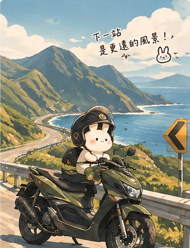

MILK MOCHI'S LITTLE WORLDPERSONAL JOURNAL
RIDE & ROADS
沿著自己的節奏出發。
這裡留給機車、騎乘路線、旅行風景與車輛紀錄。未來可以再依照需求加入路線、保養或旅程頁面。

THIS PAGE IS A STARTING POINT
關於「機車」
這個分類頁已經先建立好共用版型。等你整理好想放的內容，就能繼續擴充成店家清單、旅程紀錄、遊戲心得或其他獨立頁面。
✦ 精選內容之後可以放最想分享的項目、圖文介紹或外部連結。
↗ 延伸頁面可以繼續新增子頁面，並從本頁連結過去。